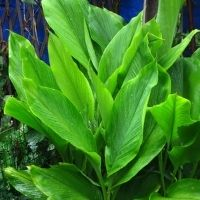
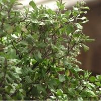

Medicinal plants are valued for their use in home remedies. Many of these can be used for regular consumption, first aid or even management of chronic conditions. Most of these plants used to grow in our backyards. They will still be found in villages and smaller towns. We can now bring them to our balconies!
Aloe Vera
Tulsi
Betal leaf

Bhringarj

turmeric
Tulsi
